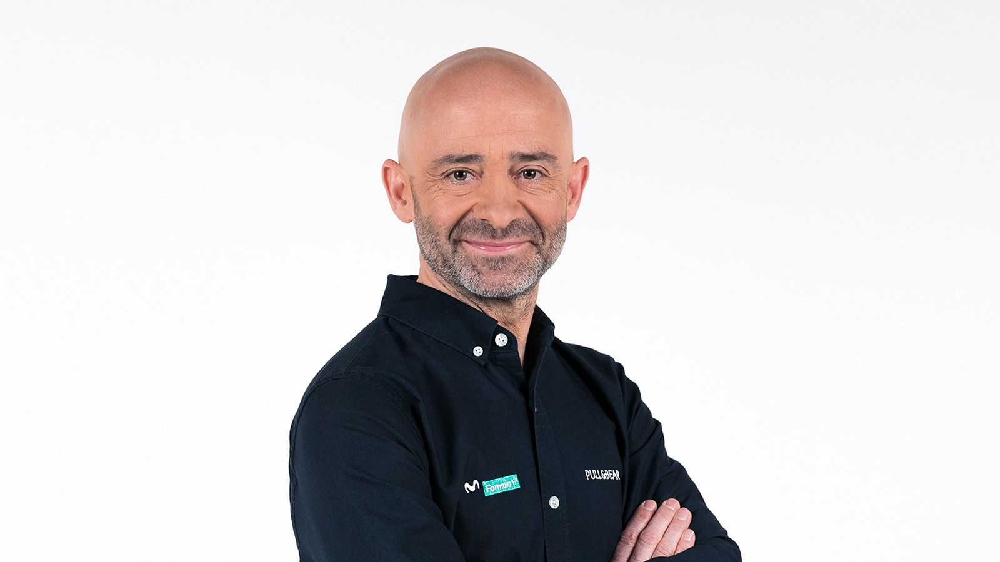
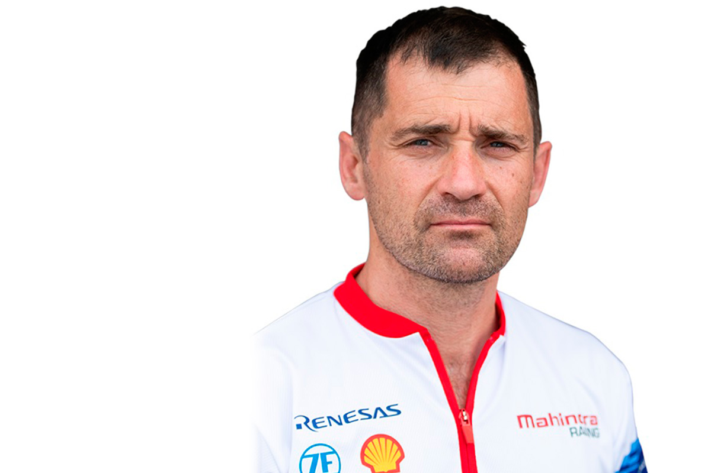
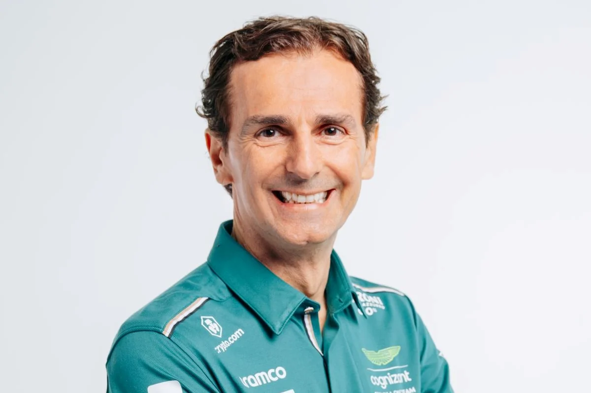

Las voces españolas que narran la emoción de la Fórmula 1

La voz más icónica de la F1 en español. Antonio Lobato lleva más de 30 años narrando el Gran Circo, primero en Canal+ y ahora en DAZN. Su estilo apasionado, sus exclamaciones y su profundo conocimiento del deporte lo han convertido en un referente absoluto para los aficionados hispanohablantes. Capaz de transmitir la adrenalina de una salida como nadie.

El cerebro técnico de la retransmisión española. Toni Cucerella aporta el análisis más detallado sobre estrategias de carrera, configuraciones aerodinámicas y decisiones de los ingenieros. Su capacidad para explicar conceptos complejos de forma clara y amena lo hace imprescindible durante los grandes premios. Complementa a Lobato a la perfección.

Del cockpit al micrófono. Pedro de la Rosa compitió en F1 desde 1999 hasta 2012, siendo piloto de pruebas de McLaren y titular de varios equipos. Su experiencia real al volante le permite dar una perspectiva única sobre lo que sienten los pilotos, las limitaciones físicas del coche y las decisiones que se toman a 300 km/h. Un lujo tenerlo en cabina.